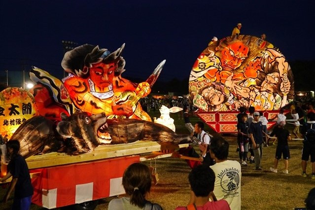

place
-場所-

-場所-
-スポット-
-名産-
-食べ物-

足柄の道の駅で食べることができます。値段は3,480円（税込み）ですが、相州牛のとろけるローストビーフと濃厚ウニのまろやかさで至福の極みとなっています。
とんかつ駒形のお店で食べることができます。キャベツが下に敷かれ、その上にロースかつがのっています。その上にはねぎがのっていて、夏の暑さで食欲が落ちた時にぴったりです。
-祭り-
足柄金太郎まつりは、子どもたちが金太郎のように健やかに成長することを祈願する、市内最大のお 祭りです。当日は、市内の名所・夕日の滝での「お水取り」の儀式からはじまります。多彩なステージショー、 のど自慢大会、神輿の競演、盆踊り、さらには花火も打ちあがり、市民一体となって盛り上がります。
フィナーレを飾るのは、打ち上げ花火。祭りの締めくくりにふさわしい美しい花火を親子で堪能できます。毎年、2,000発の花火が南足柄の夜の空を彩ります。